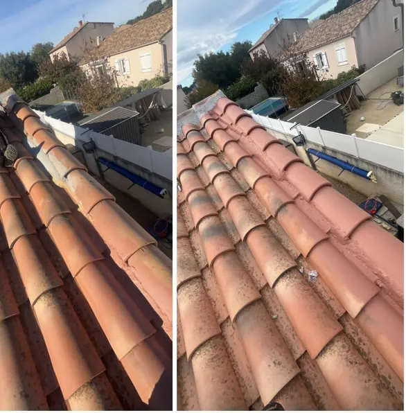
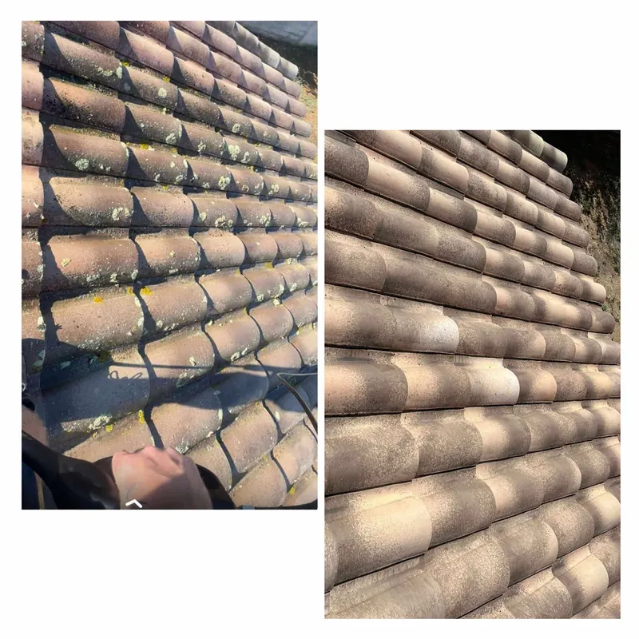
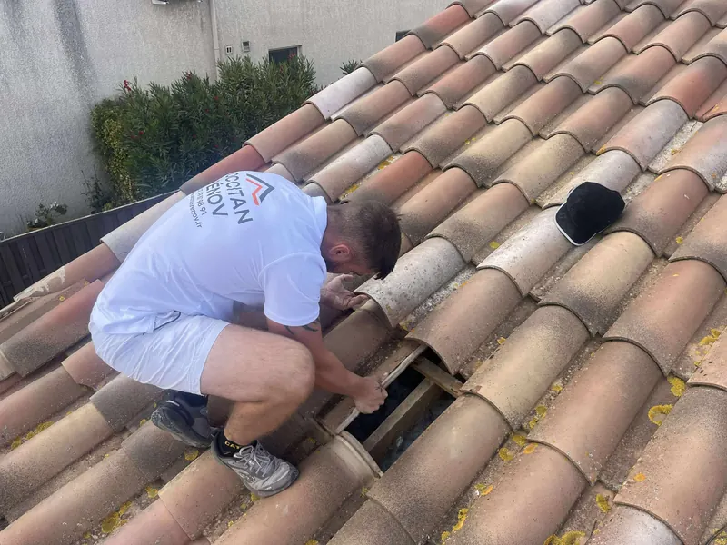

Pourquoi démousser sa toiture
La mousse agit comme une éponge. Elle garde l’eau contre la tuile, qui finit par devenir poreuse, se fendre et casser. Les racines des lichens s’accrochent dans les joints et soulèvent les tuiles. Et les débris bouchent les gouttières. Un toit encrassé vieillit beaucoup plus vite qu’un toit entretenu.
À Nîmes, les versants exposés au nord et les toitures à l’ombre des arbres sont les plus touchés.
Notre intervention
- Inspection préalable : nous vérifions l’état des tuiles avant de nettoyer, et nous vous signalons celles à remplacer
- Démoussage et nettoyage à la pression adaptée au support, pour ne pas abîmer les tuiles
- Application d’un traitement anti-mousse pour freiner la repousse
- Traitement hydrofuge : une barrière invisible qui empêche l’eau de pénétrer la tuile, tout en la laissant respirer
- Nettoyage des gouttières et du chantier
Ce que change le traitement hydrofuge
Une tuile traitée ne boit plus l’eau. Elle reste plus propre, plus longtemps, les mousses ont plus de mal à s’installer, et le risque de fissure par infiltration ou par gel diminue. C’est un entretien qui prolonge nettement la durée de vie d’une couverture, pour une fraction du prix d’une rénovation.
Aussi pour vos façades et dallages
Le même traitement s’applique aux façades, murets, terrasses et dallages : nettoyage en profondeur, puis protection hydrofuge pour garder l’éclat retrouvé et limiter les traces d’humidité.
Nos chantiers en images



Vos questions
Le nettoyage haute pression abîme-t-il les tuiles ?
Pas s’il est bien fait. Nous adaptons la pression et la buse au type et à l’état des tuiles, et nous vérifions la couverture avant d’intervenir.
Combien de temps dure un traitement hydrofuge ?
Plusieurs années, selon l’exposition de la toiture et le produit employé. Nous vous indiquons la durée attendue avec le devis.
À quel moment de l’année faut-il le faire ?
Au printemps ou au début de l’automne, par temps sec : le traitement doit être appliqué sur un support propre et sec.
Où intervenons-nous ?
Basés à Nîmes, nous intervenons dans tout le Gard : Marguerittes, Caveirac, Milhaud, Bouillargues, Rodilhan, Manduel, Redessan, Garons, Saint-Gilles, Bernis, Uchaud et les communes voisines. Voir toute la zone d’intervention.